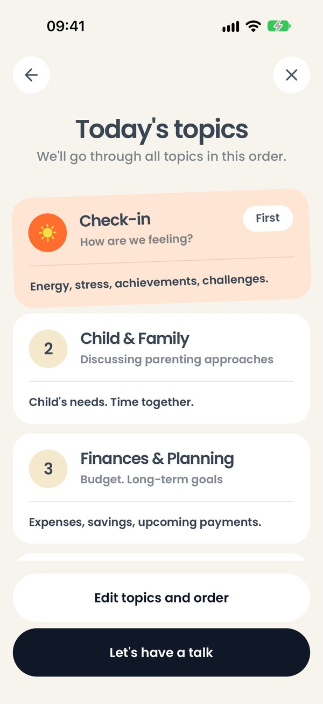

01
Темы на сегодня
Что на экране
Today's topics — список шагов встречи в том порядке, в каком их пройдут. Первым всегда стоит Check-in с меткой First — как у вас дела, последним — Wrap-up, благодарности. Между ними — темы, которые пара выбрала.
Что можно сделать
- Let's have a talk — начать.
- Edit topics and order — поменять набор и порядок тем прямо перед встречей.
- Крестик — вернуться на главный экран. Здесь он ничего не спрашивает: терять ещё нечего.
Как это работает. Если есть незаконченная встреча, экран показывает её темы, а кнопки Edit topics and order нет: встреча продолжится с тем набором, с которым началась.